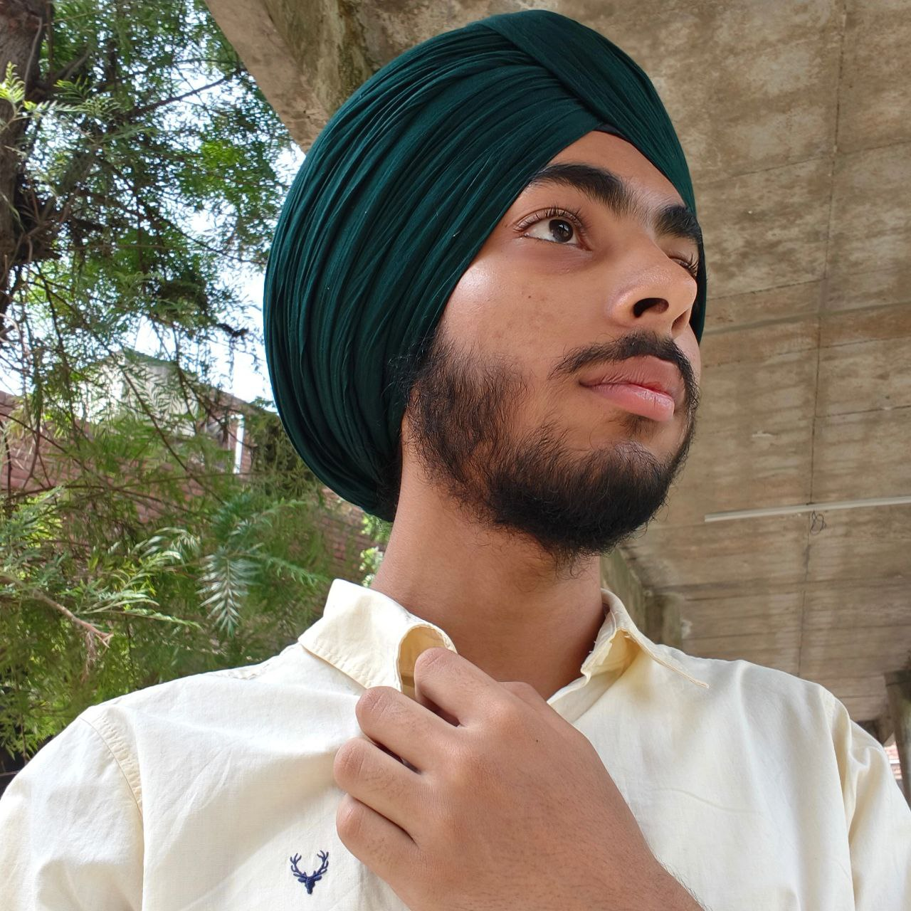

GUNEET SINGH

SUMMARY
Motivated B.Tech student (2nd year, expected graduation 2028) with a growing interest in web and app development. Currently learning web development and proficient in Python with a basic understanding of Data Structures and Algorithms. Actively seeking internship or entry-level opportunities to gain practical experience and strengthen development skills.
EDUCATION
- DEGREE: Bachelor of Technology (B.Tech) in Computer Science Engineering
- UNIVERSITY: Guru Nanak Dev University
- DEGREE SPAN: 2024 to 2028 (Expected)
Class 12 Non-Medical
- Gian Jyoti Global School
- 2024
- Percentage: 82.4%
Class 10
- Gian Jyoti Global School
- 2022
- Percentage: 87%
WORK EXPERIENCE
Content Creator & Video Editor
- Created and managed a content platform focused on sports edits, storytelling, and poetry-based content
- Edited engaging short-form videos using modern editing tools
- Developed skills in content strategy, editing, and audience engagement
YouTube Content Creator
- Produced and edited gaming content including gameplay highlights
- Gained experience in video production, editing, and content consistency
- Improved creativity and audience retention techniques
Quiz Game Project (Academic Mini Project)
- Developed a quiz-based application using programming concepts
- Implemented logic building and user interaction features
- Strengthened Python and problem-solving skills
Personal Portfolio Website (Beginner Level)
- Built a personal portfolio website to showcase skills and projects
- Continuously improving the website with better design and functionality
- Gained foundational knowledge of web development
Hackathon Participant & Team Leader
- Participated in 2 hackathons and collaborated on problem-solving challenges
- Led a team, managing coordination and task distribution
- Developed teamwork, leadership, and time management skills
Sports Leadership Experience
- Captain of school basketball team (Class 11)
- Led team to victory in inter-department competition
- Built strong leadership and team coordination skills
SKILLS
TECHNICAL SKILLS
- Python
- C++ (Basic)
- HTML
- CSS
- Basic Data Structures & Algorithms
TOOLS AND SOFTWARE
- DaVinci Resolve
- Filmora
- CapCut
- KineMaster
- Vita
CORE SKILLS
- Video Editing & Content Creation
- Problem Solving
- Teamwork & Collaboration
- Leadership & Team Management
- Time Management & Discipline
AWARDS AND CERTIFICATES
- Hackathon Participation Certificates (2 events)
- Web Development Course (in progress) by Angela Yu
- 3rd Rank in Class 12 Academics
- Winner in Inter-department Basketball Competition
CONTACT ME
HOBBIES